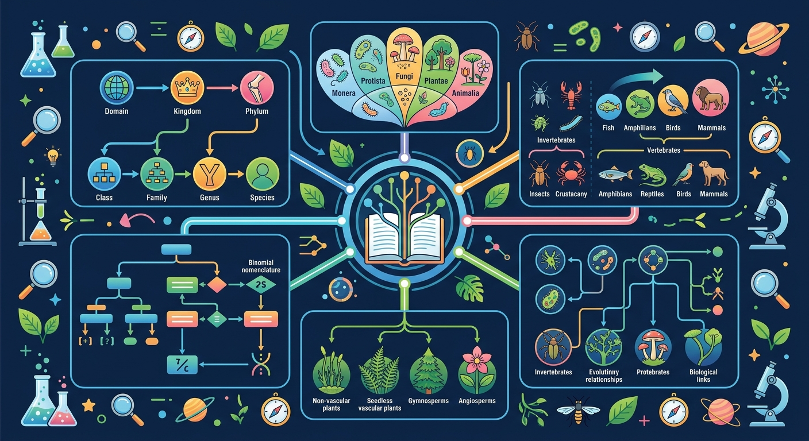

🌿 小学科学 G4 · 生命科学 · TeachAny
🌿🐟🦁🍄🔬
生物的分类
从七层分类到五界系统，探索科学家如何给数百万种生物"分门别类"


🎯 能说出生物分类的7个基本等级
🎯 能根据特征判断常见生物所属门类
🎯 能分析不同分类标准的科学依据
❓ 为什么细菌和病毒不算一个界？
❓ 蘑菇是植物吗？为什么？
❓ 怎么一眼看出动物属于哪一纲？
学完这一课，这些问题你都能自信地回答。
生物分类最基本单位是？
下列属于脊椎动物的是？
ABT 叙事框架：先建立期望，再制造转折，最后引出探究问题
图书馆里的书按类别摆放，超市里的商品按种类分区——分类让找东西变得超级方便！🏪
但是，地球上有超过870万种已知生物！如果没有统一标准，科学家之间根本无法沟通研究……
因此，科学家林奈建立了系统分类法——七层分类、双名法、五界系统，让全世界统一"语言"！🌍
点击播放，听老师一步步讲解生物分类的核心知识
从最大范围（界）到最小范围（种）——层级越小，生物越相似
👆 点击每行查看人类的分类示例
生物界的五大类群 · 有无细胞核是关键区分
都有脊椎骨 · 从水生到陆生的演化历程
点击节点可展开/折叠分类层级，探索生物世界的树状结构
👆 点击橙色节点展开·再次点击折叠 | 滑动可滚动
把右边的生物拖到它所属的脊椎动物大类中！
做完后查看详细解析与错因诊断
有疑问？问我吧！我是你的专属生物分类小助手
嗨！我是你的AI学伴 🌿
关于生物的分类，你有什么问题都可以问我！
比如："为什么蝙蝠是哺乳类不是鸟类？" 或 "五界系统是谁提出的？"
完成各项学习任务，解锁你的专属成就！
5幕动画：标题 → 七层金字塔 → 五界展示 → 脊椎动物5类 → 总结